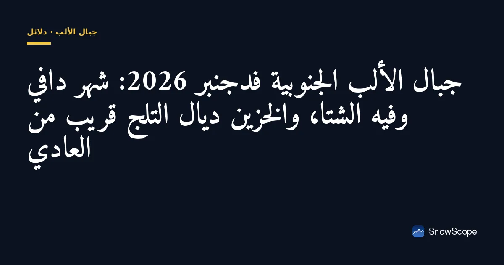

جبال الألب الجنوبية فدجنبر 2026: شهر دافي وفيه الشتا، والخزين ديال التلج قريب من العادي
تلج دجنبر هو الما المخزنة في الجبال للذوبان في الربيع. جنوب الألب سيواجه شهرا أدفا ورطبا في الأمام، لكن العلو ديال التلج في 31 دجنبر متوقع يبقى قريب من مستواه المعتاد. أغلب السلسلة ماشي فيها نمط واضح؛ غير الحافة الغربية الفرنسية كاتجنح نحو الجفاف.
شوف توقعات التلج مباشرة ديال Southern Alps فالتطبيق ديال SnowScopeالعلو ديال التلج، التنبيهات والخريطة 3D، فابور.

ماشي فيها إشارة عبر أغلب السلسلة
كاع ما نقارنو كل بقعة من 10 كم من الجبل بـ 45 دجنبر لي فاتو ديالها، أربع من خمسة جهات—من Briançon وعبر Sestriere وهبطة نحو Cuneo—ماشي فيها ميول واحدة ولا أخرى. الحافة الغربية قرب Grenoble والواديان الفرنسيان بعيد جنحو نحو الجفاف، لكن ماكاين بلاصة كاتجنح نحو التلج أكتر.
الفرصة ديال دجنبر رطب من المعتاد كاتتمدد من 31% إلى 55% عبر المنطقة، مع وسيط من 45%. هاد التشتيت كاينعكس التعقيد ديال جنوب الألب: شي واديان كايقدرو يتاخو تلج زيادة بينما جنب ديالهم كاتبقى ضعيفة.
الدفا كاتدفع التوقعات؛ الشطة كاتنزل بالأسفل
المركز الأوروبي للطقس 51 توقعات ديالو هاد قاد تقريبا متفقة على حاجة واحدة: 88% ديالهم كايتوقعو دجنبر 1.7 °C أدفا من الوسيط المعتاد. هاد الدفا هي الجزء الموثوق أكتر ديال هاد النظرة. الشطة كاتعلاو بزاف—14% فوق 101 mm المعتاد—و 61% ديال الحسابات كاتبقى رطبة من المعتاد.
بالنسبة لخزين التلج، المبادلة كاتهمّ. الهوا الدافي والجريان المتوسطي الرطب يعني أن القمم العالية كاتاخو التلج بينما المنحدرات المنخفضة والممرات كاتشوف الشطة. العلو ديال التلج كايعتمد عليهاد التوازن. النتيجة: الأعماق في نهاية السنة كاتبقى قريبة من شنو لي فاتو بيه دجنبرات الماضي.


الجانب الفرنسي: 61 سم في 31 دجنبر
جنوب الألب الفرنسي (Serre-Chevalier, Vars والريسول, Orcières, Valberg, Dévoluy) كاتشوف دجنبر مع 1.5 °C فوق الطبيعي والشطة 8% أعلى من المعتاد. النظرة للتلج الجديد هي 44 سم، شوية أقل من المعتاد 48 سم لي 45 سنة لي فاتو كاتجيب.
في 31 دجنبر، العلو المتوقع هو 61 سم. هاد تقريبا نفس 62 سم المعتاد. تلاتة دجنبرات لي فاتو—2023, 2022 و 2018—كاتطابقو الأكتر لهاد النمط ديال التوقعات. مجموعة الأعماق المحتملة كاتمتد من 49 سم إلى 85 سم، شي خطط للشروط الطبيعية ديال البداية ديال السيزون.
الجانب الإيطالي: مستقر في 64 سم
عبر الحد في وادي أوستا وبيمونت (Courmayeur, Sestriere, Monterosa, Pila)، دجنبر بقا 1.4 °C أدفا من الطبيعي، مع الشطة 7% فوق المتوسط لي فاتا. النظرة كاتحتفظ بالتلج الجديد في 43 سم، نفس الحاجة ديال دجنبر الطبيعي.
في 31 دجنبر، الأعماق توقعة في 64 سم، تاني مرة كاتطابقو الوسيط ديال 45 سنة. نص الأعضاء ديال التوقعات كايشوفو التلج أعمق من المعتاد، النص الآخر أضحل. أقرب الأمثال تاني مرة 2023, 2018 و 2022. الزاعفين في الجانب الإيطالي خصهم يتوقعو الشروط ديال الوسط بدل الحالات الطرفية.
شنو معنى هاد النظرة بالنسبة ليك
نظرة قريبة من الطبيعي كاتطمّن الواحد لكن ماشي الحاجة اللي تثير. كاتقول: احجز رحلتك ديال دجنبر بدون خوف من نقص التلج، لكن ماتتوقع شهر غالي. الدفا لي متوقع هي الإشارة اللي واثقين فيها أكتر، شي ركز عليك المنحدرات العالية والأراضي اللي مستقبلة الشمال في البداية ديال دجنبر، فين الهوا البارد كايتقلوّق.
نظرة بحال هاديك ماقادرة تتوقع العواصف الواحدة. كاع ما يظهر منخفض متوسطي في التوقعات ديال 7 أيام، جنوب الألب قادر يخزن تلج كبير في يوم ولا اثنين. البداية ديال دجنبر عادة ساكنة؛ تفرس العواصف من منتصف الشهر بعيد. قارن المحطات الواحدة تلو الواحدة عليك خريطة SnowScope—العلو ديال التلج كايتبدل بحدة من واد لآخر.
نصايح للي كيتزلجو
- ركز على المصاعد الأعلى والمنحدرات المستقبلة الشمال في البداية ديال دجنبر، كاع ما الهوا يكون أبرد والشطة أقل احتمال في الارتفاع.
- شيك التوقعات ديال 7 أيام كل أسبوع للاكتئاب المتوسطي: كايجيبو أغلب تلج دجنبر لهاد المنطقة في جفنات قصيرة.
- تفرس خريطة SnowScope قبل الحجز بالنسبة لشنو الوادي لي فيه تلج أكتر؛ الفرق بين المحطات الجنب كايقدر يكون 20–30 سم.
- إذا وصل التلج الجديد، شي ركز على المنحدرات الفوقانية في الساعات؛ الأيام الدافية كايقدرو يلينو ولا يذيبو التغطية ديال البداية ديال السيزون بسرعة.
- جهز الطبقات وكاتمة المطر: دجنبر كايجيب الما والتلج بحال السوية، والحد بيناتهم كايتبدل مع الارتفاع والوقت ديال اليوم.
على هاد الأرقام
العلو ديال التلج فالمحطات هو أكثر تلج فالجهة الفوقانية فالتاريخ المكتوب؛ هادو تقديرات لمنطقة، ماشي قياس فنقطة وحدة. التوقعات يمكن تتبدل. ديما شوف النشرة الرسمية ديال الانهيارات قبل ما تخرج من البيست.
كيفاش تستاشهد بهاد المقال
للبحث، التعليم ولا الصحافة: الأرقام والرسومات تقدر تعاود تخدم بيهم بحرية تحت CC BY 4.0 مع هاد الاستشهاد.
SnowScope (2026), جبال الألب الجنوبية فدجنبر 2026: شهر دافي وفيه الشتا، والخزين ديال التلج قريب من العادي, https://snowscope.app/blog/ar/2026/11/southern-alps-december-2026-snow-outlook.html, تشاف ف 2026-11-10
SnowScope (Atlas Labs). (2026, November 10). جبال الألب الجنوبية فدجنبر 2026: شهر دافي وفيه الشتا، والخزين ديال التلج قريب من العادي. SnowScope snow reports. https://snowscope.app/blog/ar/2026/11/southern-alps-december-2026-snow-outlook.html
BibTeX
@misc{snowscope2026southernalpsdecember2026,
author = {{SnowScope (Atlas Labs)}},
title = {جبال الألب الجنوبية فدجنبر 2026: شهر دافي وفيه الشتا، والخزين ديال التلج قريب من العادي},
year = {2026},
month = nov,
howpublished = {\url{https://snowscope.app/blog/ar/2026/11/southern-alps-december-2026-snow-outlook.html}},
note = {Published 2026-11-10 09:31 UTC; accessed 2026-11-10}
}· CC BY 4.0 · الطريقة، الداتا والأدوات →
تابع Southern Alps
فابور: ميساج ملي يجي التلج، والتوقعات كل صباح.